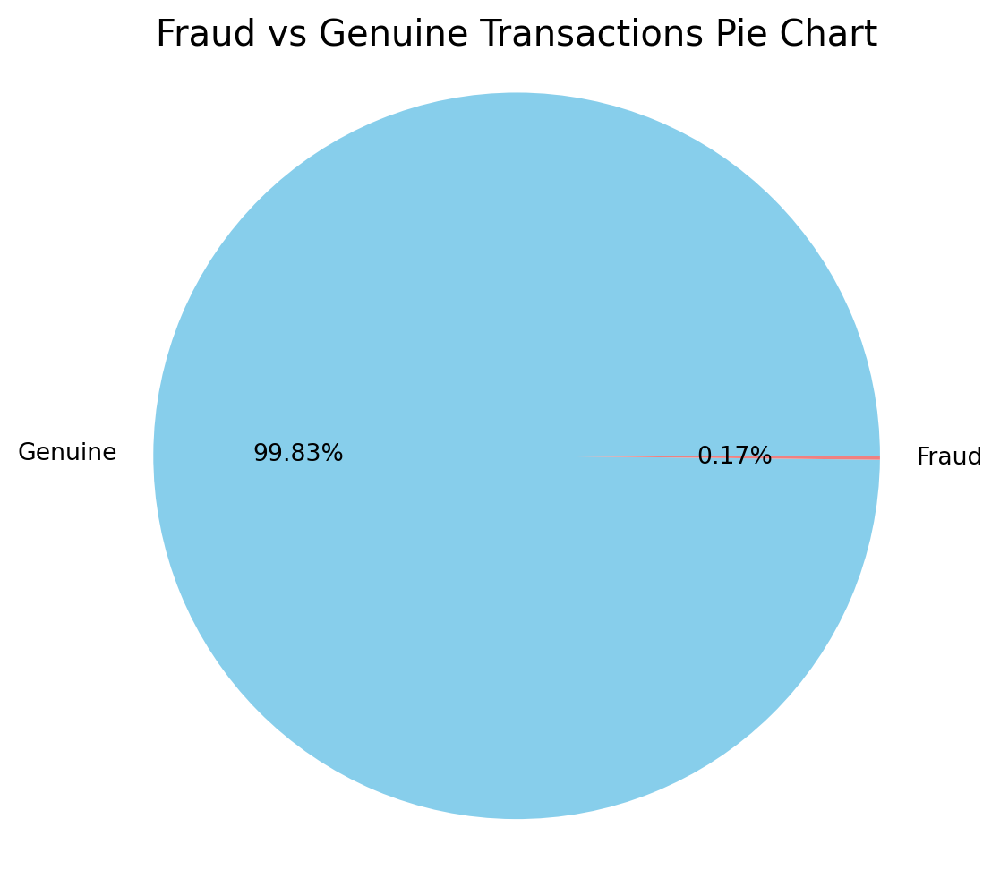
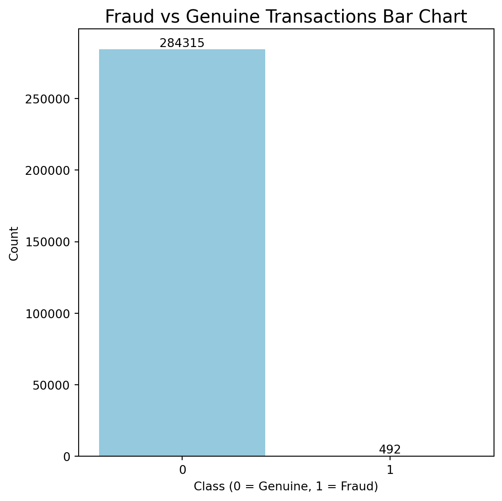
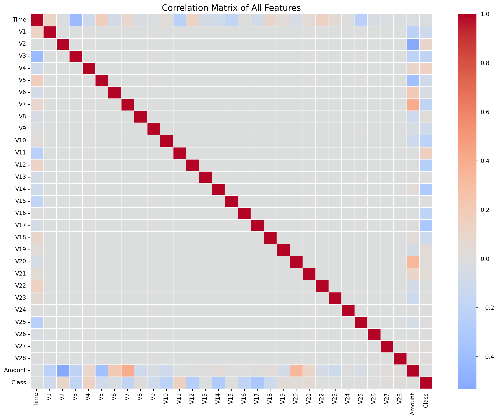
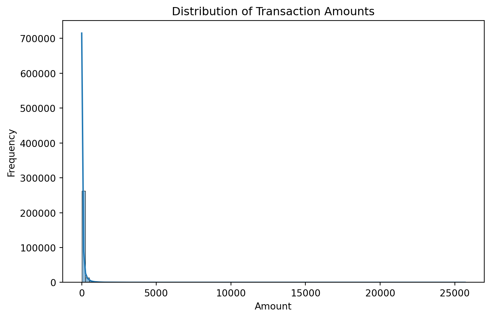
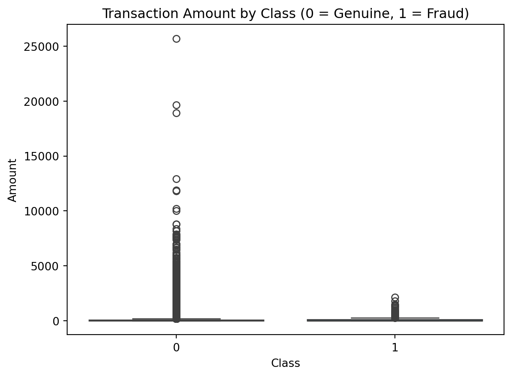
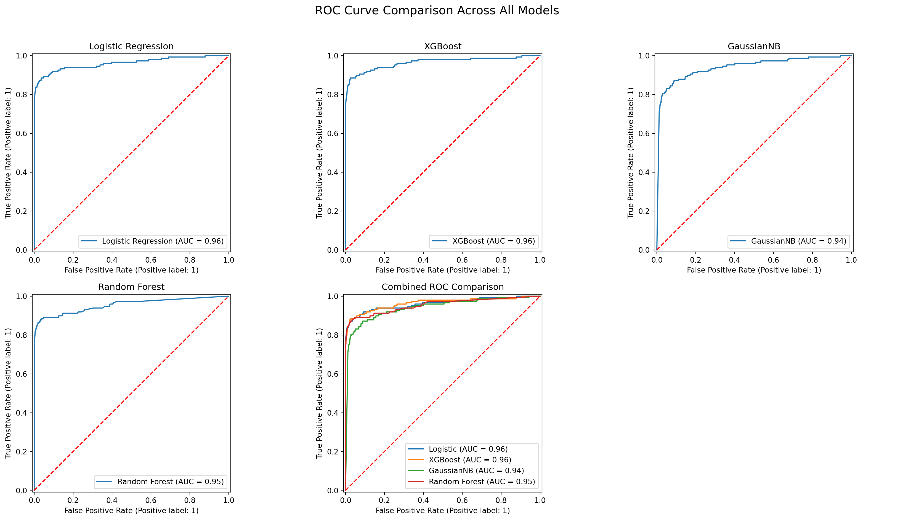
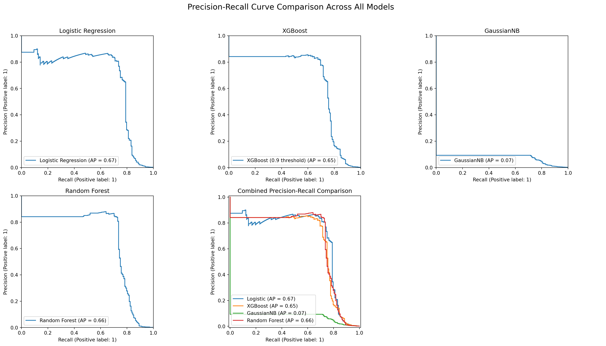

# ---------------------------------------
# 0. Import Libraries
# ---------------------------------------
import pandas as pd
import seaborn as sns
import matplotlib.pyplot as plt
from sklearn.model_selection import train_test_split
from imblearn.over_sampling import SMOTE
from sklearn.linear_model import LogisticRegression
from sklearn.ensemble import RandomForestClassifier
from sklearn.model_selection import GridSearchCV
from xgboost import XGBClassifier
from sklearn.naive_bayes import GaussianNB
from sklearn.metrics import classification_report, confusion_matrix, roc_auc_score, RocCurveDisplay, PrecisionRecallDisplay,f1_score, accuracy_score
from tabulate import tabulate Machine Learning Project Code
# ---------------------------------------
# 1. Load Dataset
# ---------------------------------------
file = '/Users/davidbyrne/Documents/ML Research Paper/creditcard.csv'
data = pd.read_csv(file)# ---------------------------------------
# 2. Exploratory Data Analysis (EDA)
# ---------------------------------------
#2.1 Inspect structure and missing values
print("Dataset preview:")
print(data.head())
print("\nDataset info:")
print(data.info())
print("\nMissing values by column:")
print(data.isna().sum()) # ADDED: print missing values summaryDataset preview:
Time V1 V2 V3 V4 V5 V6 V7 \
0 0.0 -1.359807 -0.072781 2.536347 1.378155 -0.338321 0.462388 0.239599
1 0.0 1.191857 0.266151 0.166480 0.448154 0.060018 -0.082361 -0.078803
2 1.0 -1.358354 -1.340163 1.773209 0.379780 -0.503198 1.800499 0.791461
3 1.0 -0.966272 -0.185226 1.792993 -0.863291 -0.010309 1.247203 0.237609
4 2.0 -1.158233 0.877737 1.548718 0.403034 -0.407193 0.095921 0.592941
V8 V9 ... V21 V22 V23 V24 V25 \
0 0.098698 0.363787 ... -0.018307 0.277838 -0.110474 0.066928 0.128539
1 0.085102 -0.255425 ... -0.225775 -0.638672 0.101288 -0.339846 0.167170
2 0.247676 -1.514654 ... 0.247998 0.771679 0.909412 -0.689281 -0.327642
3 0.377436 -1.387024 ... -0.108300 0.005274 -0.190321 -1.175575 0.647376
4 -0.270533 0.817739 ... -0.009431 0.798278 -0.137458 0.141267 -0.206010
V26 V27 V28 Amount Class
0 -0.189115 0.133558 -0.021053 149.62 0
1 0.125895 -0.008983 0.014724 2.69 0
2 -0.139097 -0.055353 -0.059752 378.66 0
3 -0.221929 0.062723 0.061458 123.50 0
4 0.502292 0.219422 0.215153 69.99 0
[5 rows x 31 columns]
Dataset info:
<class 'pandas.core.frame.DataFrame'>
RangeIndex: 284807 entries, 0 to 284806
Data columns (total 31 columns):
# Column Non-Null Count Dtype
--- ------ -------------- -----
0 Time 284807 non-null float64
1 V1 284807 non-null float64
2 V2 284807 non-null float64
3 V3 284807 non-null float64
4 V4 284807 non-null float64
5 V5 284807 non-null float64
6 V6 284807 non-null float64
7 V7 284807 non-null float64
8 V8 284807 non-null float64
9 V9 284807 non-null float64
10 V10 284807 non-null float64
11 V11 284807 non-null float64
12 V12 284807 non-null float64
13 V13 284807 non-null float64
14 V14 284807 non-null float64
15 V15 284807 non-null float64
16 V16 284807 non-null float64
17 V17 284807 non-null float64
18 V18 284807 non-null float64
19 V19 284807 non-null float64
20 V20 284807 non-null float64
21 V21 284807 non-null float64
22 V22 284807 non-null float64
23 V23 284807 non-null float64
24 V24 284807 non-null float64
25 V25 284807 non-null float64
26 V26 284807 non-null float64
27 V27 284807 non-null float64
28 V28 284807 non-null float64
29 Amount 284807 non-null float64
30 Class 284807 non-null int64
dtypes: float64(30), int64(1)
memory usage: 67.4 MB
None
Missing values by column:
Time 0
V1 0
V2 0
V3 0
V4 0
V5 0
V6 0
V7 0
V8 0
V9 0
V10 0
V11 0
V12 0
V13 0
V14 0
V15 0
V16 0
V17 0
V18 0
V19 0
V20 0
V21 0
V22 0
V23 0
V24 0
V25 0
V26 0
V27 0
V28 0
Amount 0
Class 0
dtype: int64#2.2 Class imbalance overview
#Get class counts
data.Class.value_counts()
labels=["Genuine","Fraud"]
is_it_fraud = data["Class"].value_counts().tolist()
values = [is_it_fraud[0], is_it_fraud[1]]
#Pie chart of class proportions
plt.figure(figsize=(6, 6))
plt.pie(values, labels=labels, autopct='%1.2f%%', startangle=0, colors=['skyblue', 'lightcoral'])
plt.title("Fraud vs Genuine Transactions Pie Chart", fontsize=15)
plt.axis('equal')
plt.show()
#Bar chart of raw class counts
plt.figure(figsize=(6,6))
ax = sns.countplot(x='Class',data=data,color="skyblue")
for i in ax.containers:
ax.bar_label(i,)
plt.title("Fraud vs Genuine Transactions Bar Chart", fontsize=15)
plt.xlabel("Class (0 = Genuine, 1 = Fraud)")
plt.ylabel("Count")
plt.tight_layout()
plt.show()

#2.3 Feature correlations
corr_matrix = data.corr()
#Plot correlation heatmap
plt.figure(figsize=(16, 12))
sns.heatmap(corr_matrix, cmap='coolwarm', center=0, linewidths=0.5)
plt.title("Correlation Matrix of All Features", fontsize=15)
plt.show()
#Top 10 feature correlation
top_corr = corr_matrix['Class'].abs().sort_values(ascending=False).head(10)
print('Top 10 features by absolute correlation with Class:')
print(top_corr)
Top 10 features by absolute correlation with Class:
Class 1.000000
V17 0.326481
V14 0.302544
V12 0.260593
V10 0.216883
V16 0.196539
V3 0.192961
V7 0.187257
V11 0.154876
V4 0.133447
Name: Class, dtype: float64# 2.4 Amount distribution analysis
#Histogram
plt.figure(figsize=(8, 5))
sns.histplot(data['Amount'], bins=100, kde=True)
plt.title("Distribution of Transaction Amounts")
plt.xlabel("Amount")
plt.ylabel("Frequency")
plt.show()
#Boxplot
sns.boxplot(x='Class', y='Amount', data=data)
plt.title("Transaction Amount by Class (0 = Genuine, 1 = Fraud)")
plt.show()

# ---------------------------------------
# 3. Data Preprocessing
# ---------------------------------------
#3.1 Remove duplicates
#Check if any duplicates are frauds
fraud_duplicates = data[data.duplicated() & (data['Class'] == 1)]
print("Fraud duplicates:", len(fraud_duplicates))Fraud duplicates: 19#Separate fraud and non-fraud cases
fraud = data[data['Class'] == 1]
non_fraud = data[data['Class'] == 0]
#Drop duplicates only in non-fraud cases
non_fraud = non_fraud.drop_duplicates()
#Combine both sets back into a single DataFrame
data = pd.concat([fraud, non_fraud], ignore_index=True)
#Confirm new shape and class balance
print("Data shape after cleaning:", data.shape)
print("Class distribution after cleaning:\n", data['Class'].value_counts())Data shape after cleaning: (283745, 31)
Class distribution after cleaning:
Class
0 283253
1 492
Name: count, dtype: int64#3.2 Drop irrelevant columns
#Drop non-numeric column used for previous visualisations
if 'Class_Label' in data.columns:
data.drop(columns=['Class_Label'], inplace=True)
#Drop 'Time'
if 'Time' in data.columns:
data.drop(columns=['Time'], inplace=True)#3.3 Split features and target
#Feature/target split
X = data.drop('Class', axis=1)
y = data['Class']#3.4 Train-test split with stratification
X_train, X_test, y_train, y_test = train_test_split(X, y, test_size=0.3, stratify=y, random_state=42)
print("Training shape:", X_train.shape)
print("Test shape:", X_test.shape)
print("Fraud in training set:", y_train.sum())
print("Fraud in test set:", y_test.sum())Training shape: (198621, 29)
Test shape: (85124, 29)
Fraud in training set: 344
Fraud in test set: 148# 3.5 Address class imbalance with SMOTE
#Set fraud class to 30% of training data (vs 50% default)
smote = SMOTE(
sampling_strategy=0.1,
k_neighbors=2,
random_state=42
)
X_train_sm, y_train_sm = smote.fit_resample(X_train, y_train)
print("\nAfter SMOTE:")
print("Total training rows:", X_train_sm.shape[0])
print("Fraud cases:", y_train_sm.sum())
print("Genuine cases:", len(y_train_sm) - y_train_sm.sum())
After SMOTE:
Total training rows: 218104
Fraud cases: 19827
Genuine cases: 198277# ---------------------------------------
# 4. Model Training & Evaluation
# ---------------------------------------
#Helper to evaluate a model
def evaluate_model(name, y_true, y_pred, y_proba=None):
print(f"\n=== {name} Evaluation ===")
print(confusion_matrix(y_true, y_pred))
print(classification_report(y_true, y_pred, digits=4))
if y_proba is not None:
auc = roc_auc_score(y_true, y_proba)
print(f"ROC AUC: {auc:.4f}")#4.1 Model 1 - Logistic Regression
#Training Logistic Regression Model
log_reg = LogisticRegression(max_iter=1000, random_state=42)
log_reg.fit(X_train_sm, y_train_sm)
#Predict on test set
y_pred_log = log_reg.predict(X_test)
y_proba_log = log_reg.predict_proba(X_test)[:, 1]
#Evaluate Logistic Regression Performance
evaluate_model('Logistic Regression', y_test, y_pred_log, y_proba_log)
=== Logistic Regression Evaluation ===
[[84870 106]
[ 31 117]]
precision recall f1-score support
0 0.9996 0.9988 0.9992 84976
1 0.5247 0.7905 0.6307 148
accuracy 0.9984 85124
macro avg 0.7621 0.8946 0.8150 85124
weighted avg 0.9988 0.9984 0.9986 85124
ROC AUC: 0.9611#4.2 Model 2 - XGBoost
#Training XGBoost Model
xgb = XGBClassifier(
scale_pos_weight=10,
max_depth=2,
learning_rate=0.05,
min_child_weight=5,
gamma=0.3,
subsample=0.7,
eval_metric='logloss',
random_state=42
)
xgb.fit(X_train_sm, y_train_sm)
#Predict on test set
y_proba_xgb = xgb.predict_proba(X_test)[:, 1]
y_pred_xgb = (y_proba_xgb > 0.9).astype(int)
#Evaluate XGBoost Performance
evaluate_model('XGBoost (0.9 threshold)', y_test, y_pred_xgb, y_proba_xgb)
=== XGBoost (0.9 threshold) Evaluation ===
[[84911 65]
[ 37 111]]
precision recall f1-score support
0 0.9996 0.9992 0.9994 84976
1 0.6307 0.7500 0.6852 148
accuracy 0.9988 85124
macro avg 0.8151 0.8746 0.8423 85124
weighted avg 0.9989 0.9988 0.9989 85124
ROC AUC: 0.9645#4.3 Model 3 - GaussianNB
#Training GaussianNB Model
nb = GaussianNB()
nb.fit(X_train_sm, y_train_sm)
#Predict on test set
y_pred_nb = nb.predict(X_test)
y_proba_nb = nb.predict_proba(X_test)[:, 1]
#Evaluate GaussianNB Performance
evaluate_model('GaussianNB', y_test, y_pred_nb, y_proba_nb)
=== GaussianNB Evaluation ===
[[83053 1923]
[ 33 115]]
precision recall f1-score support
0 0.9996 0.9774 0.9884 84976
1 0.0564 0.7770 0.1052 148
accuracy 0.9770 85124
macro avg 0.5280 0.8772 0.5468 85124
weighted avg 0.9980 0.9770 0.9868 85124
ROC AUC: 0.9410#4.4 Model 4 - Random Forest with GridSearchCV
#Training Random Forest Model with Hyperparameter Tuning
#Set Parameters
param_grid = {
'n_estimators': [100],
'max_depth': [3, 5],
'min_samples_leaf': [5, 10],
'max_features': [0.7, 'sqrt'],
'class_weight': [{0:1, 1:3}]
}
#Setup GridSearchCV with 3 folds
grid_rf = GridSearchCV(
estimator=RandomForestClassifier(random_state=42),
param_grid=param_grid,
scoring='recall',
cv=3,
n_jobs=-1,
verbose=0
)
#Fit on SMOTE-balanced training set
grid_rf.fit(X_train_sm, y_train_sm)
#Save the best tuned model
best_rf = grid_rf.best_estimator_
#Print best parameters
print("Best RF Params:", grid_rf.best_params_)
#Predict on test set
y_pred_rf = best_rf.predict(X_test)
y_proba_rf = best_rf.predict_proba(X_test)[:, 1]
#Evaluate Random Forest Performance
evaluate_model('Random Forest', y_test, y_pred_rf, y_proba_rf)Best RF Params: {'class_weight': {0: 1, 1: 3}, 'max_depth': 5, 'max_features': 0.7, 'min_samples_leaf': 5, 'n_estimators': 100}
=== Random Forest Evaluation ===
[[84864 112]
[ 37 111]]
precision recall f1-score support
0 0.9996 0.9987 0.9991 84976
1 0.4978 0.7500 0.5984 148
accuracy 0.9982 85124
macro avg 0.7487 0.8743 0.7988 85124
weighted avg 0.9987 0.9982 0.9984 85124
ROC AUC: 0.9546# ---------------------------------------
# 5. Results Comparison
# ---------------------------------------
#Create Model Comparison Table
results = [
["Logistic Regression", 0.525, 0.791, 106],
["Random Forest", 0.498, 0.750, 112],
["XGBoost (0.9 threshold)", 0.631, 0.750, 65],
["GaussianNB", 0.056, 0.777, 1923]
]
print(tabulate(results,
headers=["Model", "Precision", "Recall", "FP"],
floatfmt=".3f",
tablefmt="github"))| Model | Precision | Recall | FP |
|-------------------------|-------------|----------|------|
| Logistic Regression | 0.525 | 0.791 | 106 |
| Random Forest | 0.498 | 0.750 | 112 |
| XGBoost (0.9 threshold) | 0.631 | 0.750 | 65 |
| GaussianNB | 0.056 | 0.777 | 1923 |#ROC Curve Comparison
#Set up 2x3 ROC grid
fig, axs = plt.subplots(2, 3, figsize=(18, 10))
#Function to add baseline
def add_baseline(ax):
ax.plot([0, 1], [0, 1], linestyle='--', color='red')
#Plot 1: Logistic Regression
RocCurveDisplay.from_predictions(y_test, y_proba_log, ax=axs[0, 0], name='Logistic Regression')
axs[0, 0].set_title("Logistic Regression")
add_baseline(axs[0, 0])
#Plot 2: XGBoost
RocCurveDisplay.from_predictions(y_test, y_proba_xgb, ax=axs[0, 1], name='XGBoost')
axs[0, 1].set_title("XGBoost")
add_baseline(axs[0, 1])
#Plot 3: GaussianNB
RocCurveDisplay.from_predictions(y_test, y_proba_nb, ax=axs[0, 2], name='GaussianNB')
axs[0, 2].set_title("GaussianNB")
add_baseline(axs[0, 2])
#Plot 4: Random Forest
RocCurveDisplay.from_predictions(y_test, y_proba_rf, ax=axs[1, 0], name='Random Forest')
axs[1, 0].set_title("Random Forest")
add_baseline(axs[1, 0])
#Plot 5: Combined ROC comparison
axs[1, 1].set_title("Combined ROC Comparison")
RocCurveDisplay.from_predictions(y_test, y_proba_log, ax=axs[1, 1], name='Logistic')
RocCurveDisplay.from_predictions(y_test, y_proba_xgb, ax=axs[1, 1], name='XGBoost')
RocCurveDisplay.from_predictions(y_test, y_proba_nb, ax=axs[1, 1], name='GaussianNB')
RocCurveDisplay.from_predictions(y_test, y_proba_rf, ax=axs[1, 1], name='Random Forest')
add_baseline(axs[1, 1])
#Plot 6: Empty (for layout balance)
axs[1, 2].axis('off')
#Final touches
plt.suptitle("ROC Curve Comparison Across All Models", fontsize=16)
plt.tight_layout(rect=[0, 0, 1, 0.96])
plt.show()
#Precision-Recall Curve Comparison
#Set up 2x3 grid
fig, axs = plt.subplots(2, 3, figsize=(18, 10))
#Plot 1: Logistic Regression
PrecisionRecallDisplay.from_predictions(y_test, y_proba_log,
ax=axs[0, 0],
name='Logistic Regression')
axs[0, 0].set_title("Logistic Regression")
axs[0, 0].set_xlim([0, 1]) # Consistent axes
axs[0, 0].set_ylim([0, 1])
#Plot 2: XGBoost
PrecisionRecallDisplay.from_predictions(y_test, y_proba_xgb,
ax=axs[0, 1],
name='XGBoost (0.9 threshold)')
axs[0, 1].set_title("XGBoost")
axs[0, 1].set_xlim([0, 1])
axs[0, 1].set_ylim([0, 1])
#Plot 3: GaussianNB
PrecisionRecallDisplay.from_predictions(y_test, y_proba_nb,
ax=axs[0, 2],
name='GaussianNB')
axs[0, 2].set_title("GaussianNB")
axs[0, 2].set_xlim([0, 1])
axs[0, 2].set_ylim([0, 1])
#Plot 4: Random Forest
PrecisionRecallDisplay.from_predictions(y_test, y_proba_rf,
ax=axs[1, 0],
name='Random Forest')
axs[1, 0].set_title("Random Forest")
axs[1, 0].set_xlim([0, 1])
axs[1, 0].set_ylim([0, 1])
#Plot 5: Combined Comparison
axs[1, 1].set_title("Combined Precision-Recall Comparison")
PrecisionRecallDisplay.from_predictions(y_test, y_proba_log,
ax=axs[1, 1],
name='Logistic')
PrecisionRecallDisplay.from_predictions(y_test, y_proba_xgb,
ax=axs[1, 1],
name='XGBoost')
PrecisionRecallDisplay.from_predictions(y_test, y_proba_nb,
ax=axs[1, 1],
name='GaussianNB')
PrecisionRecallDisplay.from_predictions(y_test, y_proba_rf,
ax=axs[1, 1],
name='Random Forest')
#Plot 6: Empty (for layout balance)
axs[1, 2].axis('off')
#Final touches
plt.suptitle("Precision-Recall Curve Comparison Across All Models", fontsize=16)
plt.tight_layout(rect=[0, 0, 1, 0.96])
plt.show()
# ---------------------------------------
# 6. Acknowledgements
# ---------------------------------------
# Kaggle Community Notebooks: for inspiring certain elements of the exploratory data analysis and visualisation:
# - https://www.kaggle.com/code/marcinrutecki/smote-and-tomek-links-for-imbalanced-data
# - https://www.kaggle.com/code/gargmanish/how-to-handle-imbalance-data-study-in-detail
# - https://www.kaggle.com/code/marcinrutecki/best-techniques-and-metrics-for-imbalanced-dataset
# Michael Farayola (Lecturer): Inspiration taken from the model evaluation approach, particularly the use of ROC visualisation:
# - https://github.com/mmfara/python_application_project/blob/main/FRAUD%20DETECTION%20IN%20CREDIT%20CARD.ipynb
# ChatGPT (OpenAI): Provided troubleshooting assistance during various code errors.
# All external resources used were critically evaluated and adapted, ensuring originality and alignment with the learning outcomes of this module.